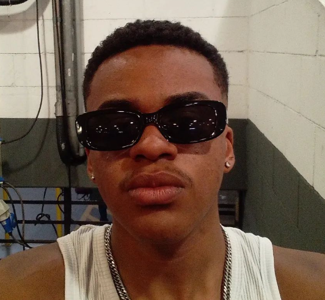

Mikael
Mikael  Guilherme
Guilherme  Luiz
Luiz  Júlio
Júlio  Diogo
Diogo 


Yumee (Juan Santana)
"Nasci em 2004, vivi boa parte da minha infância com a minha vó na Zona Sul de SP, Jardim Cocaia, porque minha mãe trabalhava muito e meu pai tava perdido na vida, sempre fui apaixonado pela musica, mas nunca imaginei que isso seria algo possível. Aos 13 para 14 descobri artistas (Konai, Kamaitachi, Sanza) que hoje são meus amigos, que mudaram minha cabeça sobre como fazer musica e o que era possível e comecei a crer que eu podia viver daquilo, que eu podia começar a cantar e mostrar minha arte de dentro do meu quarto, foi o que eu fiz, vi muita gente desistir no caminho e quase fiz o mesmo, mas agora minha vida é musica".
Poyz (João Marcelo)
"Minha ispiração surgiu quando eu escutei os beatles pela primeira vez,
foi uma banda que abriu a minha mente e me fez ter vontade de mudar o mundo, estar
nos palcos fazendo as pessoas se sentirem bem, sem falar que as artes no geral devem
ser apreciadas por todos, é algo tão puro e verdadeiro que vem de dentro".

TwoMt (Kauan Oliveira)
"Nascido e criado na Zona Sul de São Paulo, na região do Capão Redondo, cresci sempre em volta de muitas pessoas, fui criado pela minha mãe e minhas avós. Tive desde cedo contato com a música onde o começo foi na igreja, meu avô tinha uma igreja Black, levando e adotando o estilo das igrejas negras dos Estados Unidos, sempre com muita música, dança e teatros, com isso fui aprendendo e observando muito sobre a música por anos. Aos 15 anos após passar por tempos muitos difíceis da minha vida, vi na música uma forma de lutar contra a falta de dinheiro e dificuldade. Assim desde os 15 venho fazendo e criando músicas de diversos estilos."
DEPOIMENTOS
MARCOS
"Eu adorei as aulas com o João, o método de ensino dele foi realmente muito bom pro meu desenvolvimento, claro que ainda não sou profissional kkkk, mas já me ajudou bastante com teoria musical e etc.
Valeu pro pessoal da ACORDE."
REGINA
"O Kauan é bem engraçado, foi bem legal as aulas com ele. Ele conseguiu ensinar uma pessoa sem coordenação motora nenhuma a paletar um violão, isso por si só já é incrível.
Sou muito grata por vocês, obrigada."
CAMILE
"A voz do Juan é graciosa, ele me deu aula de canto, foi bem emocionante do começo até o fim, sem falar da gentileza dele. Agora eu canto feito uma princesa.
Brigadinho pelas aulas."
SUA GRANDE CHANCE!
Venha realizar o seu sonho tão almejado!
Aqui você tem a oportunidade de receber grandes aprendizados do mundo musical.
Você aprenderá lições importantes que serão necessárias para o seu desenvolvimento artístico.
Não perca seu tempo, venha fazer parte da ACORDE!